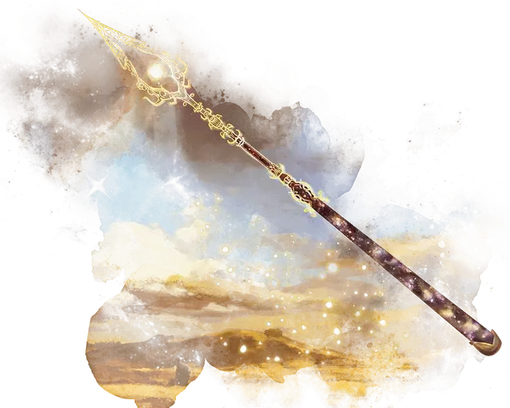

Крусор, копьё Гелиода
Khrusor, Spear of Heliod
Оружие (копьё), артефакт (требуется настройка)

Гелиод владеет Крусором, копьём, благословлённым силой солнца. В его руках он может быть брошен из Никса в любую точку Тероса. Когда Гелиод одалживает своё оружие смертному, это обычно делается для того, чтобы он мог выполнить какую-то великую работу в его честь или в качестве проверки его достоинства.
Солнечное копьё. Это копьё даёт бонус +3 к броскам атаки и урона, совершённым этим оружием. Когда вы попадаете атакой с помощью этого копья, цель дополнительно получает 2к8 урона излучением.
Благословлённый солнцем. Если вы поклоняетесь Гелиоду, то вы получаете все следующие преимущества, для которых у вас есть необходимое значение благоволения:
Благоволение 3+. Вы получаете 15 временных хитов при каждом рассвете.
Благоволение 10+. Копье получает 1 случайно определяемое малое положительное свойство.
Благоволение 25+. Копье получает 1 дополнительное случайно определяемое малое положительное свойство.
Благоволение 50+. Копье получает 1 случайно определяемое основное положительное свойство.
Если вы не поклоняетесь Гелиоду, то копье получает 2 случайно определяемых основных отрицательных свойства.
Сияющий. Копьё излучает яркий свет в радиусе 30 футов и тусклый свет ещё на 30 футов. Этот свет идентичен солнечному.
Солнечное возмездие. Когда вы получаете урон от существа в пределах 5 футов от вас, вы можете реакцией совершить рукопашную атаку копьём против этого существа. При попадании копье наносит урон как обычно, и существо становится ослеплённым до начала своего следующего хода. Это свойство копья не может быть использовано снова до следующего рассвета.
Заклинания. Копьё имеет 10 зарядов. Удерживая его, вы можете использовать действие, чтобы израсходовать 1 или более его зарядов, чтобы наложить одно из следующих заклинаний (Сл спасброска 18): направляющий снаряд [guiding bolt] (1 заряд), дневной свет [daylight] (3 заряда, свет исходит из наконечника копья), солнечный луч [sunbeam] (6 зарядов). Копьё восстанавливает 1к6 + 4 израсходованных заряда ежедневно на рассвете.
Уничтожение копья. Если Крусор отнезти во дворец Эреба в Тизерие и принести в жертву Эребу поборника Гелиода, то Крусор либо уничтожается, либо в фундаментально искажается для служения Эребу.